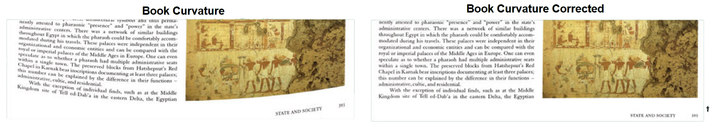
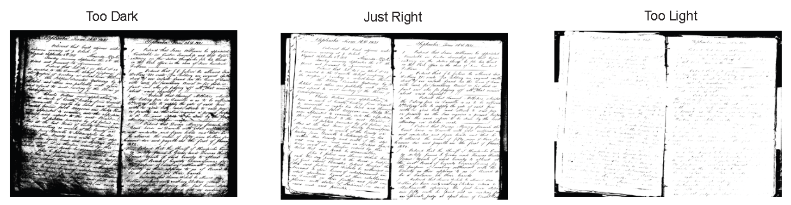
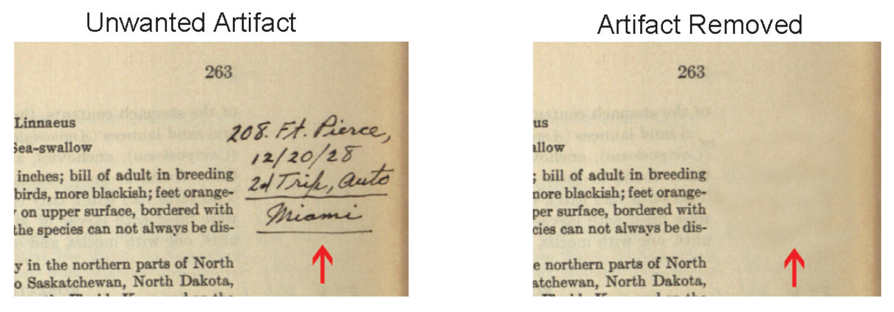
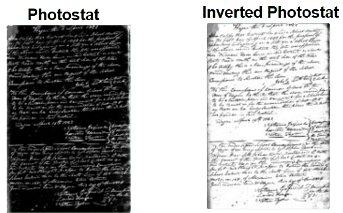

Opus Image Treatment
Opus takes the tedium out of image treatment by providing users with an interface that is wholly dedicated to processing images for archive, preservation and access. Even problem images can be fully processed in seconds. Prior to manually reviewing and adjusting images, Opus performs image treatment functions automatically. If any automatic image treatment function requires additional adjustment, Opus allows the user to graphically 'assist' Opus and make adjustments in seconds.
Automatic image treatment removes skew, adjusts the border, and eliminates fan and gutter. The treated image may be further refined by manual treatment.
Book curvature produced from scanning tightly bound books may be realigned using Opus' sophisticated book curve correction tool. Text and photos are returned to their original alignment and orientation.
Opus allows for the output of a large variety of derivatives. Controlling threshhold optimizes the clarity for each type of derivative which, in turn, produces the highest quality image for that output request.
Artifacts of all types may be removed from an image while retaining the underlying variations in shading. Fingers, blemishes, stains or even handwritten notes may all be removed to produce an image that closely resembles the original. Opus enables you to publish both the treated and untreated image.
Photostats and negatives are easily inverted revealing an otherwise unreadable document.